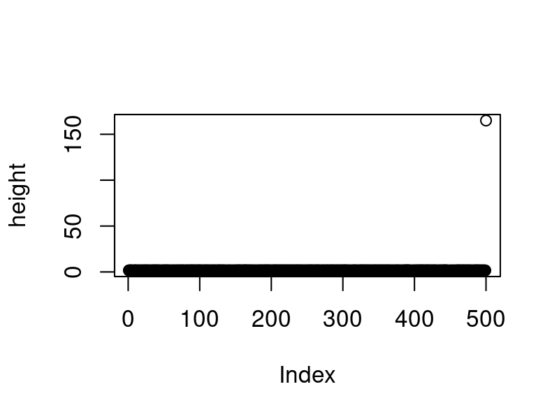

Simple Data Manipulation and Visualization
Grammar of graphics and Plotting I
Daniel Bader, Jun Cheng, Jan Krumsiek, Julien Gagneur
Why plotting?
Data in scientific publications is shown as plots, sure. But there is more.
A realistic example to warm up:
A vector containing (hypothetical) height measurements for adults in Germany:
length(height)
## [1] 500
head(height, n=20)
## [1] 1.706833 1.635319 1.709841 1.707259 1.668659 1.580702 1.608214 1.636738
## [9] 1.649740 1.758209 1.684362 1.614045 1.598355 1.636974 1.636535 1.631482
## [17] 1.661350 1.609864 1.669606 1.594311
Calculating the mean height:
mean(height)
## [1] 1.976743
Wait... what?
mean(height)
## [1] 1.976743
What happened?
A.
mean()is not the right function to assess what we want to know.B. Adults in Germany are exceptionally tall
C. A decimal point error in one data point.
D. It's a multiple testing problem because we are looking at so many data points (n=500).
See next slide
Solution
mean(height)
## [1] 1.976743
What happened?
- A.
mean()is not the right function to assess what we want to know.- No, the mean is exactly what we want.
- B. Adults in Germany are exceptionally tall.
- OK, no...
- C. A decimal point error in one data point.
- Yes, see next slide.
- D. It's a multiple testing problem because we are looking at so many data points (n=500).
- This question was intentionally misleading, this does not have anything to do with multiple testing.
The outlier...
plot(height)
hist(height)

mean(height)
## [1] 1.976743
The outlier...
Getting rid of the outlier fixes the dataset
fheight <- height[height < 3]
plot(fheight)
hist(fheight)

mean(fheight)
## [1] 1.650043
The outlier...
This is how the broken dataset was generated:
height <- c(rnorm(499, mean=1.65, sd=0.045), 165)
Grammar of Graphics
The Grammar of Graphics is a visualization theory developed by
Leland Wilkinson in 1999.
- influenced the development of graphics and visualization libraries alike
- 3 key principles
- Separation of data from aesthetics (e.g. x and y axis, color-coding)
- Definition of common plot/chart elements (e.g. dot plots, boxplots, etc.)
- Composition of these common elements (one can combine elements as layers)
ggplot2 and Grammar of Graphics
ggplot(mpg, aes(x=displ, y=cty, colour=class)) + # Data: how variables in the data are mapped to aesthetic attributes
geom_point() + # Layers: made up of geometric elements and statistical transformation.
facet_wrap(~ class, ncol=4) + # Facets
theme(axis.title = element_text(size=15), legend.title = element_text(size=15)) +
labs(title='displ vs cty', x='Engine displacement', y='city miles per gallon') +
stat_smooth() # Stats
Grammar Defines Components of Graphics
Data: data.frame (or data.table) object where columns correspond to variables
Aesthetics: describes visual characteristics that represent data (aes)
- for example: position, size, color, shape, transparency, fill
Layers: made up of geometric objects that represent data (geom_)
- for example: points, lines, polygons, ...
Scales: for each aesthetic, describes how visual characteristic is converted to display values (scale_)
- for example: log scales, color scales, size scales, shape scales, ...
Facets: describes how data is split into subsets and displayed as multiple sub graphs (facet_)
Stats: statistical transformations that typically summarize data (stat)
- for example: counts, means, medians, regression lines, ...
Coordinate system: describes 2D space that data is projected onto (coord_)
- for example: Cartesian coordinates, polar coordinates, map projections, ...
Simple example: Human Development versus Corruption Perception
ind <- fread('../extdata/CPI_HDI.csv')
ind
## V1 country wbcode CPI HDI region
## 1: 1 Afghanistan AFG 12 0.465 Asia Pacific
## 2: 2 Albania ALB 33 0.733 East EU Cemt Asia
## 3: 3 Algeria DZA 36 0.736 MENA
## 4: 4 Angola AGO 19 0.532 SSA
## 5: 5 Argentina ARG 34 0.836 Americas
## ---
## 147: 147 Uruguay URY 73 0.793 Americas
## 148: 148 Uzbekistan UZB 18 0.675 East EU Cemt Asia
## 149: 149 Yemen YEM 19 0.498 MENA
## 150: 150 Zambia ZMB 38 0.586 SSA
## 151: 151 Zimbabwe ZWE 21 0.509 SSA
CPI: Corruption Perceptions Index (http://www.transparency.org/)
HDI: Human Development Index (http://hdr.undp.org/)
Year: 2014
Simple example: Human Development versus Corruption Perception
ggplot(ind, aes(CPI, HDI)) + geom_point()

CPI: Corruption Perceptions Index (http://www.transparency.org/)
HDI: Human Development Index (http://hdr.undp.org/)
Year: 2014
Simple scatter plot
ggplot(ind, aes(CPI, HDI)) +
geom_point()

ggplot returns an object
p <- ggplot(ind, aes(CPI, HDI)) + geom_point()
p
ggplot returns an object
names(p)
## [1] "data" "layers" "scales" "mapping" "theme"
## [6] "coordinates" "facet" "plot_env" "labels"
saveRDS(p, "../extdata/lec06_p.rds")
p <- readRDS("../extdata/lec06_p.rds")
p + geom_hline(yintercept = 0.7)
Mapping of aesthetics can be done globally at ggplot() or at individual layers
ggplot(ind, aes(CPI, HDI)) +
geom_point(size=0.5) +
geom_text(aes(label = wbcode), size=2, vjust=0)
Mapping of aesthetics can be done globally at ggplot() or at individual layers
ggplot(ind) +
geom_point(aes(CPI, HDI))
Global mapping is inherited by default to all geom layers, while aes mapping at individual layer is only recognized at that layer.
Mapping of aesthetics done at individual layers
ggplot(ind) +
geom_point(aes(CPI, HDI), size=0.5) +
geom_text(aes(CPI, HDI, label = wbcode), size=2, vjust=0)

Individual layer mapping cannot be recognized by other layers
ggplot(ind) +
geom_point(aes(CPI, HDI)) +
geom_text(aes(label = wbcode))
## Error: geom_text requires the following missing aesthetics: x and y
You can easily map variables to different colours, sizes or shapes!
ggplot2 automatically scales for you.
ggplot(data = ind) +
geom_point(aes(CPI, HDI, color = region))

American color or British colour both acceptable.
You can easily map variables to different colours, sizes or shapes!
ggplot(data = ind) +
geom_point(aes(CPI, HDI, shape = region))
Aesthetic mappings can also be supplied in individual layers
ggplot(ind, aes(CPI, HDI)) +
geom_point(aes(color = region))
What's the result of the following command?
ggplot(data = mpg)
A Nothing happens
B A blank figure will be produced
C A blank figure with axis will be produced
D All data in
mpgwill be visualized
ggplot builds plot layer by layer.
Neither variables were mapped nor geometry specified.
What's the result of the following command?
ggplot(data = mpg, aes(x = hwy, y = cty))
A Nothing happens
B A blank figure will be produced
C A blank figure with axis will be produced
D A scatter plot will be produced
ggplot builds plot layer by layer.
Axis x and y are mapped. But no geometry specified.
What's the result of the following command?
ggplot(data = mpg, aes(x = hwy, y = cty)) + geom_point()
A Nothing happens
B A blank figure will be produced
C A blank figure with axis will be produced
D A scatter plot will be produced
ggplot builds plot layer by layer.
Axis x and y are mapped. But no geometry specified.
Take-home
- Visualization is as important as statistics. Both are needed.
- Visualization can help finding "bugs" in the data
- Grammar of graphics separates data, aesthetics, and geometries
- more to come next week ...